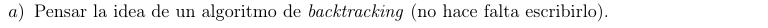

 \(✓\)
 \[\text{
PC}_{ws}\left( i,\text{ acc} \right) = \begin{cases}
0 & \text{si }i < 1 \\
\text{ PC}_{ws}\left( i - 1,\text{ acc} \right) & \text{si }i \geq 1
\land s_{i} < \text{ acc} \\
\max\left\{ \text{PC}_{ws}\left( i - 1,\text{ acc} \right),1 +
\text{PC}_{ws}\left( i - 1,\text{ acc} + w_{i} \right) \right\} &
\text{si }i \geq 1 \land s_{i} \geq \text{ acc }
\end{cases}\]
\[\text{
PC}_{ws}\left( i,\text{ acc} \right) = \begin{cases}
0 & \text{si }i < 1 \\
\text{ PC}_{ws}\left( i - 1,\text{ acc} \right) & \text{si }i \geq 1
\land s_{i} < \text{ acc} \\
\max\left\{ \text{PC}_{ws}\left( i - 1,\text{ acc} \right),1 +
\text{PC}_{ws}\left( i - 1,\text{ acc} + w_{i} \right) \right\} &
\text{si }i \geq 1 \land s_{i} \geq \text{ acc }
\end{cases}\]
Recorremos “de adelante para atrás”
El caso base no suma nada, es solo para definir un final, ya pasamos todos los \(i \in \left\{ 1...N \right\}\).
El primer caso recursivo define si superamos el peso que la caja \(i\) puede cargar, luego, no suma nada y sigue sin tener en cuenta esa caja.
El segundo caso recursivo es el que nos suma \(1\) si \(i\) puede cargarlo, entonces suma \(w_{i}\) al acumulador y continúa la recursión.
El problema se resuelve con \(\text{PC}_{ws}(N,0)\)

Primero definimos \(\text{acc}_{\max} = \sum_{i = 1}^{N}w_{i}\), luego
f solve(w,s,N):- Sea $k$ el resultado, las cajas están apiladas de la forma ${i_1 ... i_k} | i_1 < ... < i_k$
- $ forall j in {1...k-1}: (sum_(t=j+1)^k w_i_t ) <= s_i_j $
memo = matriz N*acc_max con todo -1
f pc(i,acc):
if i = 0:
ret 0
if memo[i][acc] >= 0:
ret memo[i][acc]
if s[i] < acc:
memo[i][acc] = pc(i-1,acc)
if s[i] >= acc:
memo[i][acc] = max(pc(i-1,acc), pc(i-1,acc+w[i])+1)
return memo[i][acc]
ret pc(N,0)
Su complejidad espacial y temporal están limitadas por la cantidad de estados, \(O\left( N \cdot \sum_{i = 1}^{N}w_{i} \right)\)
f solve(w,s,N):
memo = [-1] de N*acc_max
for acc en 0...acc_max:
memo[0][acc] = 0
for i in 1...N:
for acc in acc_max...0:
if acc+w[i] <= acc_max:
use = 1 + memo[i-1][acc+w[i]]
if acc+w[i] > acc_max:
use = 0
memo[i][acc] = max(memo[i-1][acc], use)

\(N \in {\mathbb{N}}\) cantidad de cajas.
Sea \(i \in \left\{ 1...N \right\}\) la notación de la \(i\)-ésima caja, hay 2 vectores:
\(w = \left\{ w_{1}\ldots w_{N} \right\}\) donde \(w_{i} \in {\mathbb{N}}\) es el peso de la \(i\)-ésima caja.
\(s = \left\{ s_{1}\ldots s_{N} \right\}\) donde \(s_{i} \in {\mathbb{N}}\) es el aguante de la \(i\)-ésima caja.
Sea \(k\) el resultado, las cajas están apiladas de la forma \(\left\{ i_{1}\ldots i_{k} \right\}~|~i_{1} < \ldots < i_{k}\)
\[\forall j \in \left\{ 1...k - 1 \right\}:\left( \sum_{t = j + 1}^{k}{w_{i}}_{t} \right) \leq {s_{i}}_{j}\]
\[\text{ PC}_{ws}\left( i,\text{ acc} \right) = \begin{cases} 0 & \text{si }i < 1 \leftarrow \left\{ B \right\} \\ \text{ PC}_{ws}\left( i - 1,\text{ acc} \right) & \text{si }i \geq 1 \land s_{i} < \text{ acc} \leftarrow \left\{ R1 \right\} \\ \max\left\{ \text{PC}_{ws}\left( i - 1,\text{ acc} \right),1 + \text{PC}_{ws}\left( i - 1,\text{ acc} + w_{i} \right) \right\} & \text{si }i \geq 1 \land s_{i} \geq \text{ acc} \leftarrow \left\{ R2 \right\} \end{cases}\]
Donde \(i\) es la caja actual y acc es el peso acumulado de las cajas sobre \(i\)
Caso base: \(i < 1\)
Tenemos 0 cajas
\(\text{PC}_{ws}\left( 0,\text{ acc} \right)\underset{\left\{ B \right\}}{=}0\)
Paso inductivo:
HI: Existe un \(i = k\) tal que \(\text{PC}_{ws}\left( k - 1,\text{ acc} \right)\) es el máximo de cajas apilables hasta la \(k\)-ésima caja
Queremos ver que \(\forall\text{ acc } \in {\mathbb{N}}.\text{ PC}_{ws}\left( k,\text{ acc} \right)\)
Caso R1: \(s_{k} < \text{ acc}\)
Si \(s_{k} < \text{ acc}\) no puedo apilar las cajas acumuladas sobre \(k\), por lo que no sumamos nada y seguimos a la siguiente caja.
\(\text{PC}_{ws}\left( k,\text{ acc} \right) = \text{ PC}_{ws}\left( k - 1,\text{ acc} \right)\underset{\text{HI }}{=}V\)
Caso R2 \(s_{k} \geq \text{ acc}\)
subcaso 1, no apilamos \(k\):
Mantenemos el mismo número de cajas apiladas como en el caso R1
\(\text{PC}_{ws}\left( k,\text{ acc} \right) = \text{ PC}_{ws}\left( k - 1,\text{ acc} \right) = \ S1\)
subcaso 2, apilamos \(k\):
Apilamos la \(k\)-ésima caja
\(\text{PC}_{ws}\left( k,\text{ acc} \right) = \text{ PC}_{ws}\left( k - 1,\text{ acc} + w_{k} \right) + 1 = \ S2\)
Justificación
R2 devuelve el máximo entre S1 y S2, por HI sabemos que hasta \(k - 1\) teníamos el máximo acumulable, se evalúan todas las chances, para todo \(k\). Luego \(\text{PC}\left( k,\text{acc} \right)\) computa máximo número de cajas apiladas hasta la \(k\)-ésima caja.
\(⬜\)